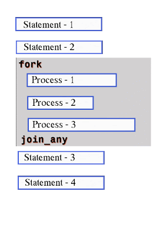
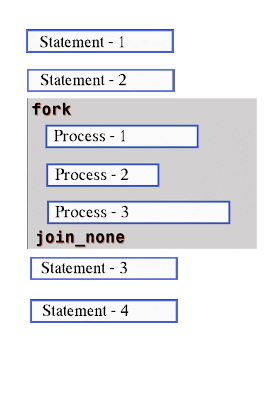
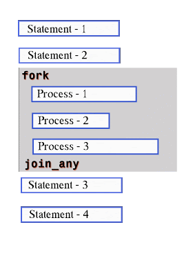
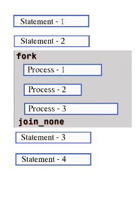

🌟 What is a Thread or Process?
In Verilog, a thread or process is just a small piece of code that can run on its own, at the same time as other code.
Think of it like having multiple workers doing different jobs simultaneously rather than waiting for one to finish before starting the next.
🔀 Different fork ... join Types
- fork ... join – All threads must finish before continuing.
- fork ... join_any – Continue as soon as any one thread completes.
- fork ... join_none – Start all threads and continue immediately without waiting.
 



🧠 Why Do We Use Threads?
Imagine you're running a complex lab experiment. You:
- Set up one machine to monitor temperature.
- Another machine to log results.
- Meanwhile, you prepare the next batch.
All these actions happen at the same time, in parallel.
✅ That's why threads are important in verification — you can monitor signals, drive inputs, and check outputs all at once without waiting for one to finish first.
⚙️ What Does fork ... join Mean?
This is how Verilog says: "Start a few things at once."
- With
fork ... join, you say: “Do these 3 things at the same time, but wait until all of them are done before continuing.” - With
fork ... join_any, you say: “Start everything, but as soon as one finishes, I’m good to go.” - With
fork ... join_none, you say: “Just start them all, I don’t care when they finish, I’ll move on immediately.”
🚫 Limitations of Verilog fork ... join
It’s a bit like saying: “I won’t leave the house until all my friends are ready.”
If even one thread takes too long, the rest of your code has to wait — this can slow things down or cause delays when one thread isn’t important for the next steps.
🧑🏫 Real-Life Analogy
Think of a school project group:
- fork join: The teacher says, “Submit only when everyone finishes their part.”
- fork join_any: The teacher says, “As soon as any one of you completes something, come tell me.”
- fork join_none: The teacher says, “Just start your tasks, I’ll move on regardless.”